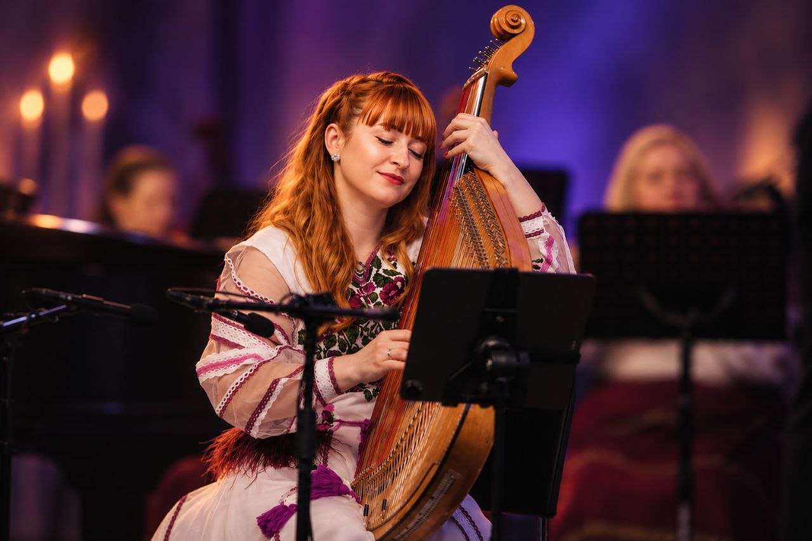
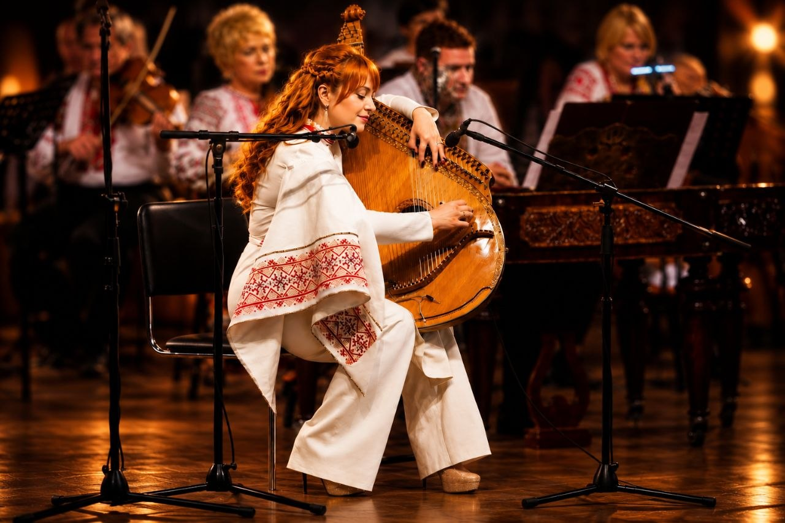
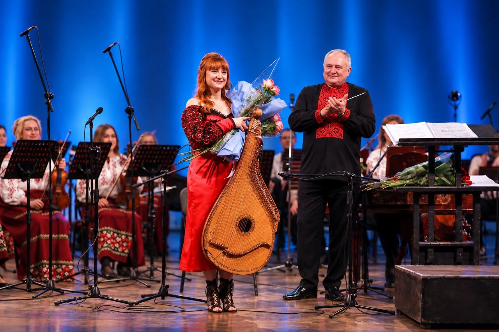
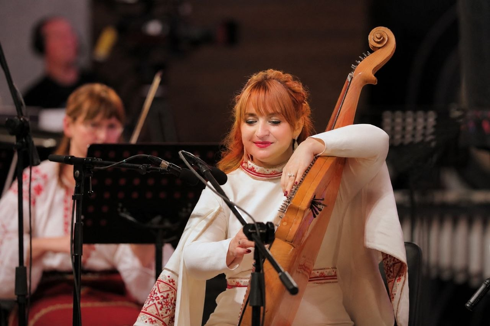
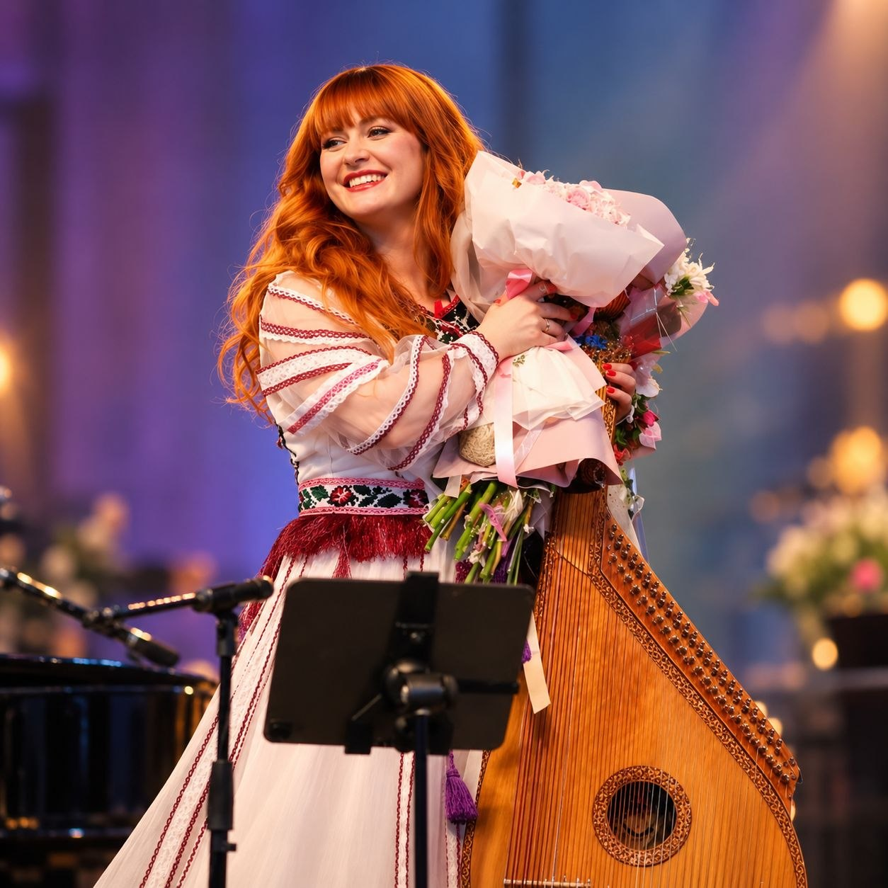
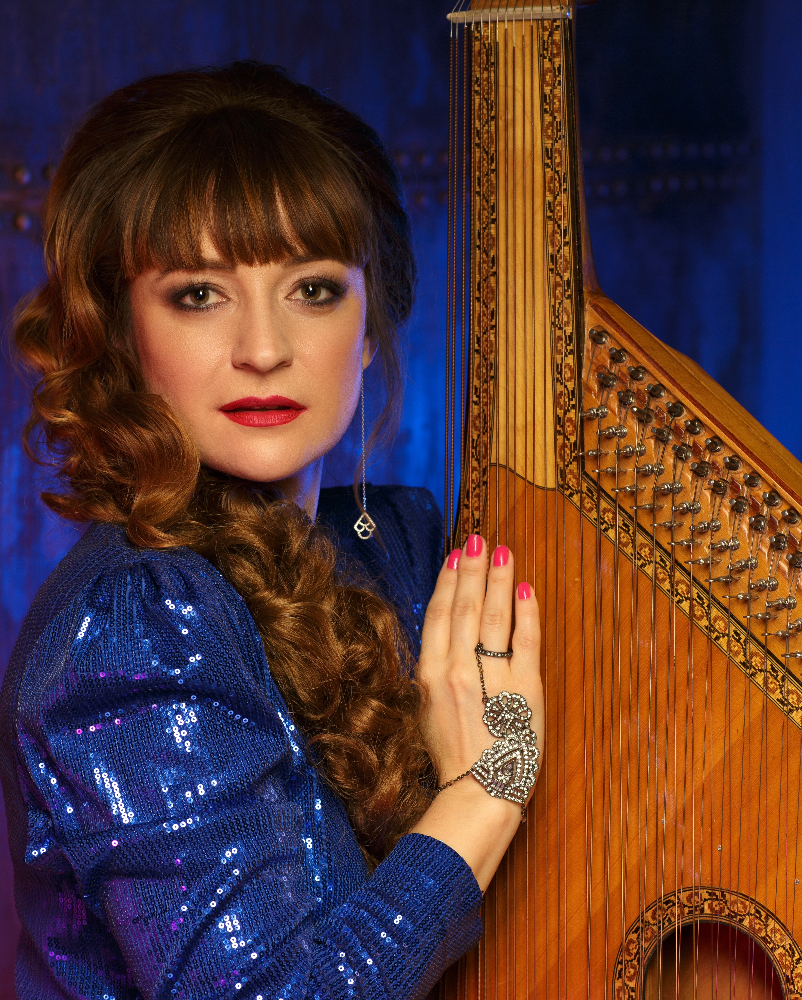

Watch
Videos


Bandura player
Music
Iryna Lytvynenko is a Ukrainian bandura artist, singer and educator redefining the sound of the bandura for the international concert stage. A virtuoso performer and passionate advocate for her instrument, she brings the bandura beyond its traditional boundaries — into contemporary concert music, orchestral collaborations and new artistic encounters. Through performances, world premieres and collaborations with leading composers and ensembles, Iryna reveals the bandura as a powerful, expressive and deeply modern instrument — carrying the voice of Ukraine to audiences around the world.
“VOICES” is built around two poles – memory and faith in the future. Grief, personal loss, Ukrainian folklore, contemporary classical music, and the energy of victory came together in a program shaped by the experience of a country at war. The concert was conducted by Keri-Lynn Wilson at the National Philharmonic of Ukraine. Alongside contemporary classical music, the program featured Ukrainian folk-inspired music with “Colomyika la vita” by Volodymyr Zubytskyi, performed in a version for bandura and orchestra arranged by Andrii Shust. The bandura solo was performed by Iryna Lytvynenko, with the performance also marking the Kyiv Camerata’s first appearance with a bandura.
Read the article →Gallery






Watch
Press
“Iryna Lytvynenko Is the First Bandura Player to Ever Play My Music.”
“I am very proud to be the composer of the piece with which she declares the independence and cultural identity for herself and every person in her audience.”
"Iryna Lytvynenko plays the bandura to a different tune."
"She’s Not Covering My Music. She’s Making It Her Own."
“Ukrainian bandura virtuoso Iryna Lytvynenko has been adapting my harp concertos for her national instrument and performing them in Kyiv — despite shelling and blackouts.”
“Now it’s taking on the voice of another artist, played on an instrument I’ve never touched, in a country I’ve never been…”
"I Was the Laboratory. She Is the Legacy." “Iryna’s groundbreaking, life-affirming concerts are part of a groundswel.”
"Music as an Act of Resistance Against Despair"
"Following the success of Kolomyika La Vita at the Svetozár Stračina Grand Prix 2026, bandura virtuoso and Ukrainian Radio soloist Iryna Lytvynenko joins host Halyna Babiy to discuss the award-winning recording and the expressive possibilities of the bandura. A conversation about Ukrainian musical identity, artistic excellence, and the bandura’s place on the international concert stage."
"Suspilne Ukraine (soloist Iryna Lytvynenko) wins a prize and special awards at the Svetozár Stračina Grand Prix 2026 "
Contact